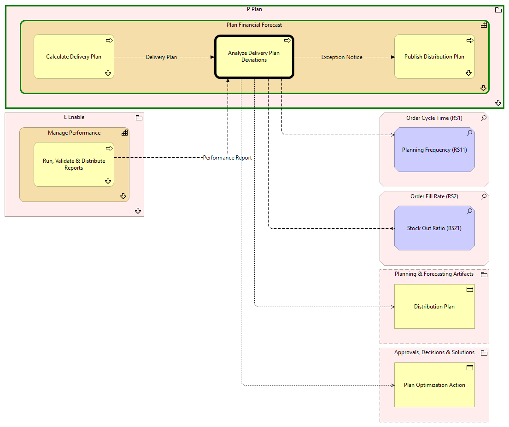

Analyze Delivery Plan Deviations - Context
(
)

generated_by
build_archi_xml.py::gen_proc_node_context_view
generator_path
pedro/capabilities/build_archi_xml_assign/build_archi_xml_assign.py
run_at
2026-10-10T17:56:18
view_type
process_context
P Plan
Plan Financial Forecast
Analyze Delivery Plan Deviations
Calculate Delivery Plan
Calculate Delivery Plan - Context
Publish Distribution Plan
Publish Distribution Plan - Context
Plan Financial Forecast - Processes
P Plan - Processes
E Enable
Manage Performance
Run, Validate & Distribute Reports
Run, Validate & Distribute Reports - Context
Manage Performance - Processes
E Enable - Processes
Order Cycle Time (RS1)
Planning Frequency (RS11)
Order Fill Rate (RS2)
Stock Out Ratio (RS21)
Planning & Forecasting Artifacts
Distribution Plan
Approvals, Decisions & Solutions
Plan Optimization Action
Exception Notice
Analyze Delivery Plan Deviations
Publish Distribution Plan
Analyze Delivery Plan Deviations
Planning Frequency (RS11)
Analyze Delivery Plan Deviations
Stock Out Ratio (RS21)
Analyze Delivery Plan Deviations
Distribution Plan
Analyze Delivery Plan Deviations
Plan Optimization Action
Delivery Plan
Calculate Delivery Plan
Analyze Delivery Plan Deviations
Performance Report
Run, Validate & Distribute Reports
Analyze Delivery Plan Deviations